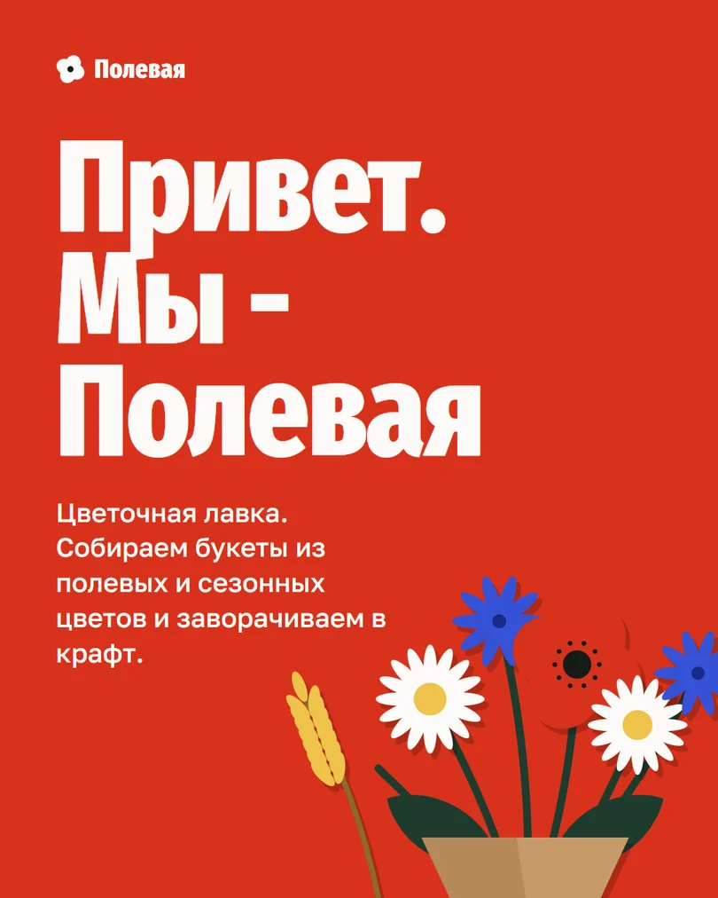
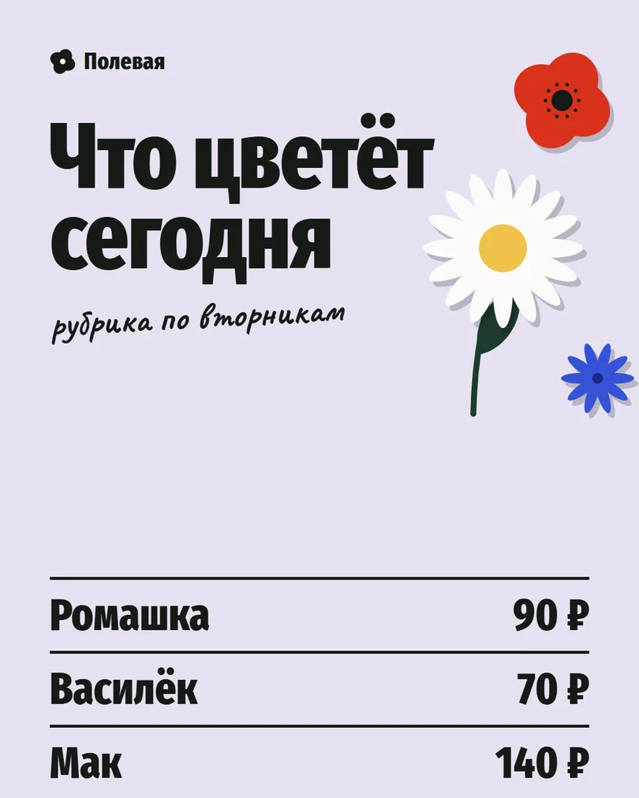
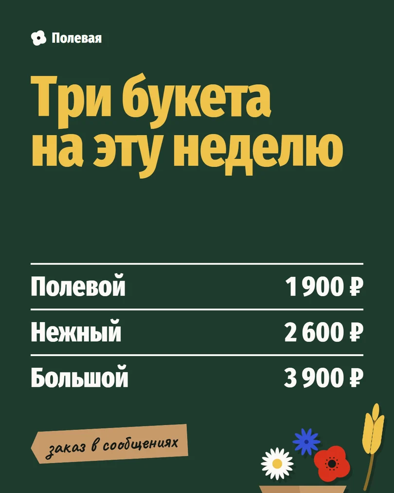
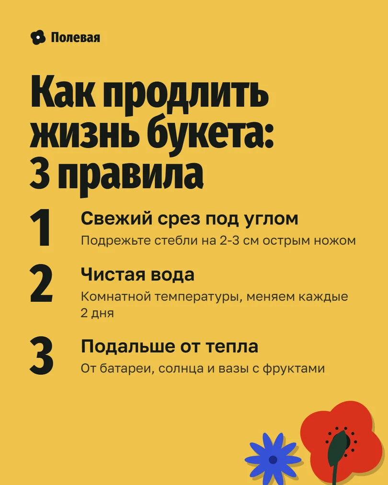
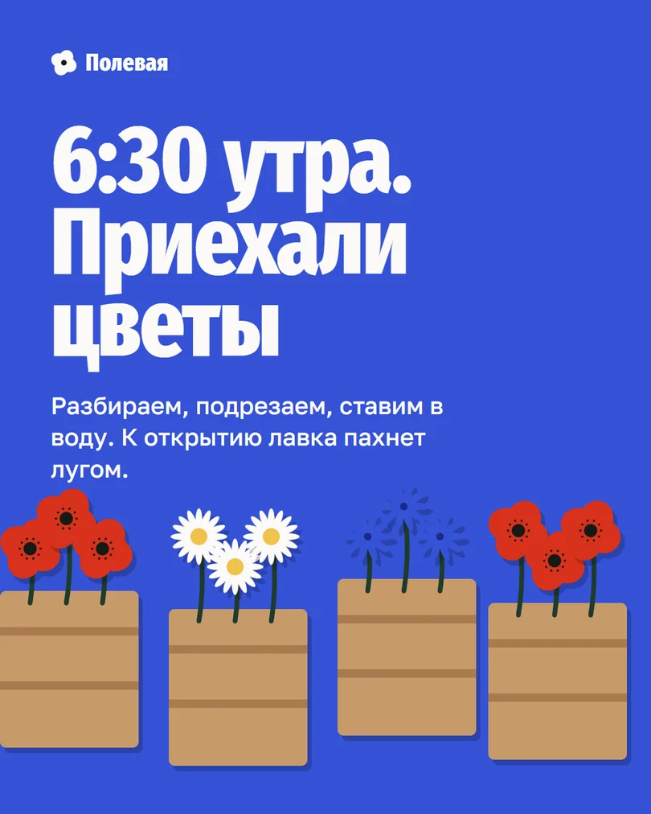
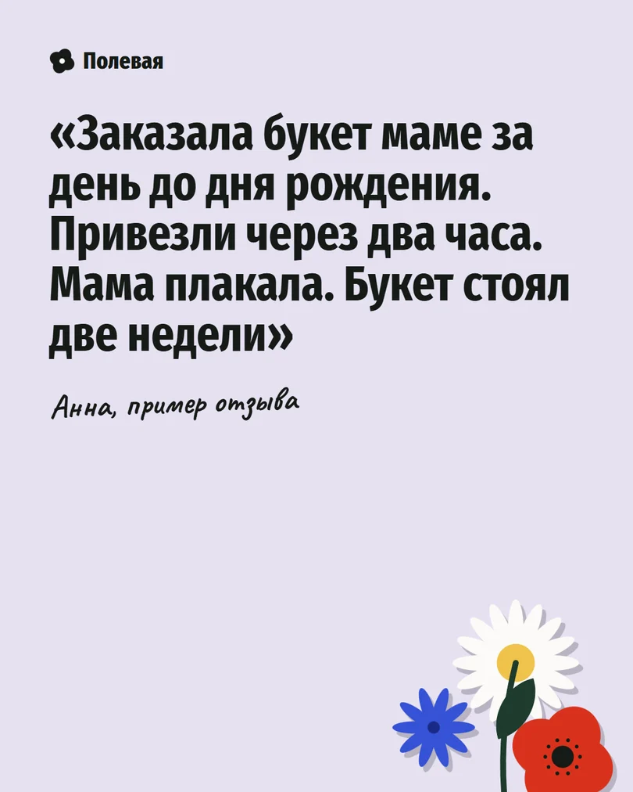
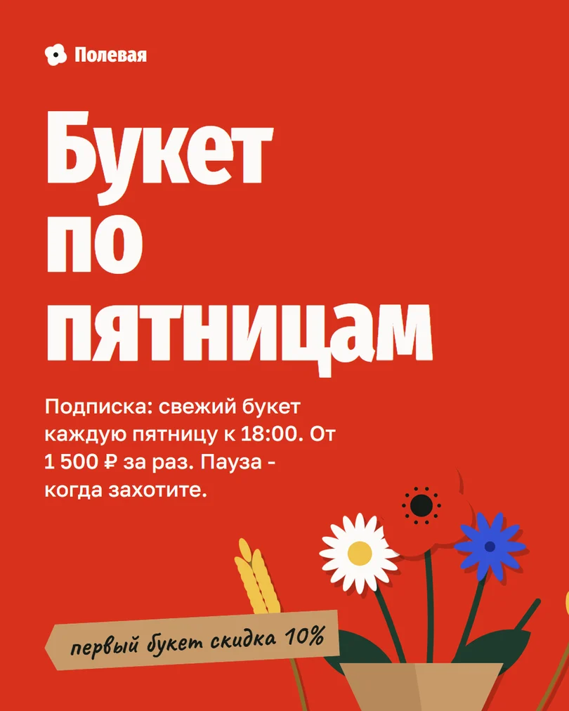
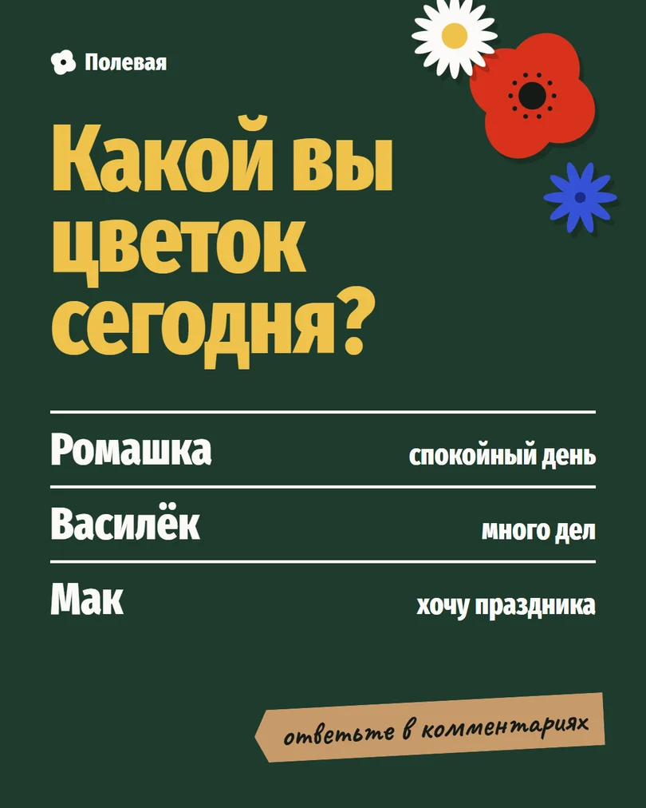
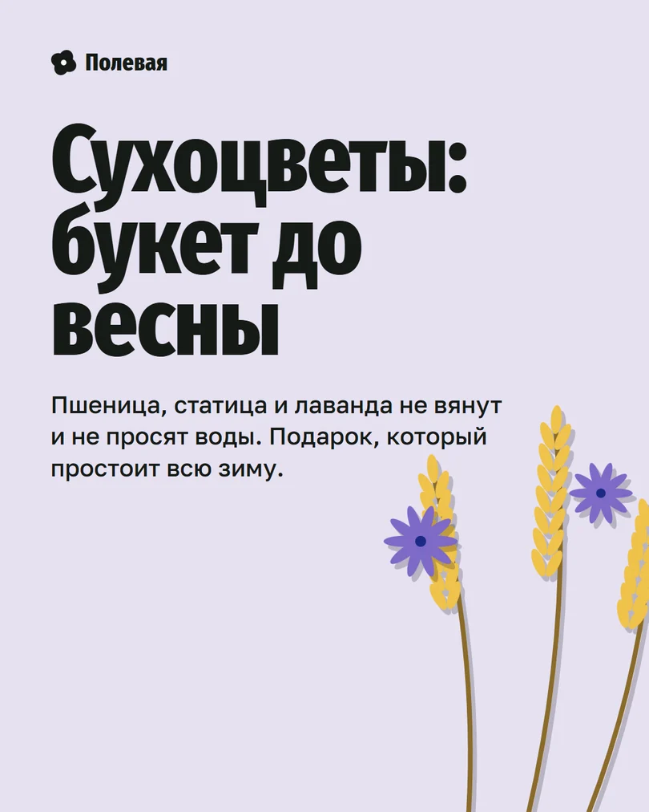

ЗнакомствоТекст подписи
Привет! Мы - «Полевая». Собираем букеты из полевых и сезонных цветов и заворачиваем в крафт.
Здесь будем показывать, что цветёт сегодня, рассказывать, как ухаживать за букетами, и иногда пускать вас за кулисы.
Заказать букет можно в сообщения: напишите повод, бюджет и день.

Рубрика по вторникамТекст подписи
Что цветёт сегодня. Каждый вторник показываем, что приехало этим утром, и называем цену за стебель.
Ромашка - 90 ₽, василёк - 70 ₽, мак - 140 ₽. Из них можно собрать букет на любой бюджет.
Что добавить в рубрику на следующей неделе? Напишите в комментариях.

ПродажаТекст подписи
Три букета на эту неделю: Полевой - 1 900 ₽, Нежный - 2 600 ₽, Большой - 3 900 ₽.
Состав зависит от того, что цветёт сегодня, поэтому два букета никогда не бывают одинаковыми. Чтобы заказать, напишите в сообщения.

ПользаТекст подписи
Как продлить жизнь букета: 3 правила.
1. Подрежьте стебли под углом на 2-3 см острым ножом.
2. Налейте воду комнатной температуры и меняйте раз в два дня.
3. Поставьте подальше от батареи и вазы с фруктами.
Сохраните пост, чтобы он был под рукой.

ЗакулисьеТекст подписи
6:30 утра. Приехали цветы. Разбираем, подрезаем, ставим в воду. К открытию лавка пахнет лугом.
Какой цветок вы бы взяли первым?

ОтзывТекст подписи
Заказала букет маме за день до дня рождения. Привезли через два часа. Мама плакала. Букет стоял две недели.
Спасибо, Анна, что поделились. (Пример отзыва для демо-кейса.)

ПодпискаТекст подписи
Букет по пятницам. Свежий букет каждую пятницу к 18:00, от 1 500 ₽ за раз. Поставить на паузу или отменить можно в любой момент: просто напишите нам.
Первый букет по подписке - со скидкой 10%.

Вопрос подписчикамТекст подписи
Какой вы цветок сегодня?
Ромашка - спокойный день. Василёк - много дел. Мак - хочу праздника.
Ответьте в комментариях, а мы подберём к вашему настроению букет.

СезонТекст подписи
Сухоцветы: букет до весны. Пшеница, статица и лаванда не вянут и не просят воды.
Подарок, который простоит всю зиму. Собираем под ваш бюджет, пишите в сообщения.